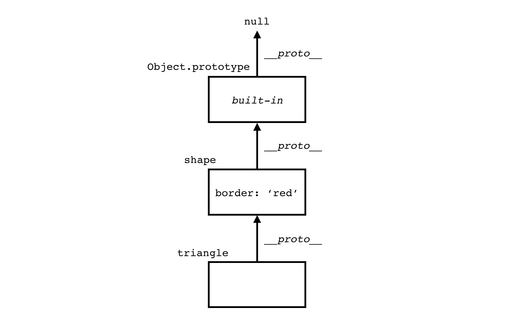
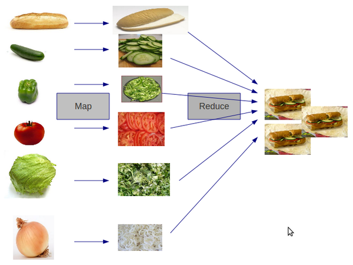

Number, boolean, string, undefined and null are primitives.
There is only one number type in JavaScript, the 64-bit binary oating
point type. Decimal numbers’ arithmetic is inexact.
As you may already know, 0.1 + 0.2 does not make 0.3 . But with
integers, the arithmetic is exact, so 1+2 === 3 .
Numbers inherit methods from the Number.prototype object. Methods
can be called on numbers:
(123).toString(); //"123"
(1.23).toFixed(1); //"1.2"
There are functions for converting strings to numbers:
Number.parseInt() , Number.parseFloat() and Number():
Number.parseInt("1") //1
Number.parseInt("text") //NaN
Number.parseFloat("1.234") //1.234
Number("1") //1
Number("1.234") //1.234
Invalid arithmetic operations or invalid conversions will not throw an
exception, but will result in the NaN “Not-a-Number” value.
Number.isNaN() can detect NaN.
The + operator can add or concatenate.
1 + 1 //2
"1" + "1" //"11"
1 + "1" //"11"
A string stores a series of Unicode characters. The text can be inside
double quotes "" or single quotes ''.
Strings inherit methods from String.prototype. They have methods
like : substring() , indexOf() and concat().
"text".substring(1,3) //"ex"
"text".indexOf('x') //2
"text".concat(" end") //"text end"
Strings, like all primitives, are immutable. For example concat()
doesn’t modify the existing string but creates a new one.
A boolean has two values : true and false .
The language has truthy and falsy values.
false , null , undefined , '' (empty string), 0 and NaN are falsy.
All other values, including all objects, are truthy.
The truthy value is evaluated to true when executed in a boolean
context. Falsy value is evaluated to false.
let text = '';
if(text) {
console.log("This is true");
} else {
console.log("This is false");
}
Variables can be created using var, let and const.
var declares and optionally initializes a variable. Variables declared
with var have a function scope. They are treated as declared at the
top of the function. This is called variable hoisting.
The let declaration has a block scope.
The value of a variable that is not initialize is undefined.
A variable declared with const cannot be reassigned. Its value,
however, can still be mutable. const freezes the variable,
Object.freeze() freezes the object. The const declaration has a
block scope.
An object is a dynamic collection of properties.
The property key is a unique string. When a non string is used as the
property key, it will be converted to a string. The property value can be
a primitive, object, or function.
The simplest way to create an object is to use an object literal:
let obj = {
message : "A message",
doSomething : function() {}
}
There are two ways to access properties: dot notation and bracket
notation. We can read, add, edit and remove an object’s properties at
any time.
object.name , object[expression]object.name = value, object[expression] = valueobject.name , delete object[expression]
let obj = {}; //create empty object
obj.message = "A message"; //add property
obj.message = "A new message"; //edit property
delete obj.message; //delete property
Objects can be used as maps. A simple map can be created using
Object.create(null) :
let fruits = Object.create(null);
fruits["a"] = "apple";
fruits["b"] = "banana";
fruits["b"]; //"banana"
All object’s properties are public. Object.keys() can be used to iterate over all properties.
function logProperty(name){
console.log(name); //property name
console.log(obj[name]); //property value
}
Object.keys(obj).forEach(logProperty);
Object.assign() copies all properties from one object to another. An
object can be cloned by copying all its properties to an empty object:
let book = { title: "The good parts"};
let clone = Object.assign({}, book);
An immutable object is an object that once created cannot be changed.
If you want to make the object immutable, use Object.freeze().
Primitives (except null and undefined ) are treated like objects, in
the sense that they have methods but they are not objects.
Numbers, strings, and booleans have object equivalent wrappers. These
are the Number , String , and Boolean functions.
In order to allow access to properties on primitives, JavaScript creates
an wrapper object and then destroys it. The process of creating and
destroying wrapper objects is optimized by the JavaScript engine.
Primitives are immutable, and objects are mutable.
Arrays are indexed collections of values. Each value is an element.
Elements are ordered and accessed by their index number.
JavaScript has array-like objects. Arrays are implemented using objects.
Indexes are converted to strings and used as names for retrieving
values.
A simple array like let arr = ['A', 'B', 'C'] is emulated using an
object like the one below:
{
'0': 'A',
'1': 'B',
'2': 'C'
}
Note that arr[1] gives the same value as arr['1'] : arr[1] === arr['1'].
Removing values from the array with delete will leave holes.
splice() can be used to avoid the problem, but it can be slow.
let arr = ['A', 'B', 'C'];
delete arr[1];
console.log(arr); // ['A', empty, 'C']
console.log(arr.length); // 3
Functions are independent units of behavior.
Functions are objects. Functions can be assigned to variables, stored in
objects or arrays, passed as an argument to other functions, and
returned from functions.
There are three ways to create a function:
- Function Declaration (aka Function Statement)
- Function Expression (aka Function Literal)
- Arrow Function
The Function Declaration
function is the first keyword on the linefunction doSomething(){}
function is not the first keyword on the linelet doSomething = function() {}
let doSomething = () => {};
Arrow functions don’t have their own this and arguments.
doSomething(arguments)
theObject.doSomething(arguments)
theObject["doSomething"](arguments)
new Constructor(arguments)
(function ({
var aName = "Barry";
})();
Methods are functions that are stored in objects. Functions are independent.
In order for a function to know on which object to work
on this is used.
This represents the function’s context.
There is no point to use this when a function is invoked with the
function form: doSomething().
In this case this is undefined or is
the window object, depending if the strict mode is enabled or not.
When a function is invoked with the method form
theObject.doSomething() , this represents the object.
When a function is used as a constructor new Constructor() , this
represents the newly created object.
The value of this can be set with apply() or call() :
doSomething.apply(theObject) . In this case this is the object sent as
the first parameter to the method.
The value of this depends on how the function was invoked, not
where the function was created. This is of course a source of confusion.
JavaScript has dynamic typing. Values have types, variables do not.
Types can change at run time.
function log(value){
console.log(value);
}
log(1);
log("text");
log({message : "text"});
The typeof() operator can check the type of a variable.
let n = 1;
typeof(n); //number
let s = "text";
typeof(s); //string
let fn = function() {};
typeof(fn); //function
Object.create() , constructor function, and class build objects over the prototype system.
let servicePrototype = {
doSomething : function() {}
}
let service = Object.create(servicePrototype);
console.log(service.__proto__ === servicePrototype); //true
Object.create() builds a new object service which has the servicePrototype object as its prototype.
This means that doSomething() is available on the service object.
It also means that the __proto__ property of service points to the servicePrototype object.
Let’s now build a similar object using class.
class Service {
doSomething(){}
}
let service = new Service();
console.log(service.__proto__ === Service.prototype);
All methods created in the Service class will be added to the
Service.prototype object.
Instances of the Service class will have the same prototype ( Service.prototype ) object.
All instances will delegate method calls to the Service.prototype object.
Methods are created once on Service.prototype and then inherited by all instances.
Objects inherit from other objects. Each object has a prototype and
inherits their properties from it. The prototype is available through the
“hidden” property __proto__.
When you request a property which the object does not contain,
JavaScript will look down the prototype chain until it either nds the
requested property, or until it reaches the end of the chain.

JavaScript has first class functions and closures.
These are concepts that open the way for Functional Programming in JavaScript.
As a result, higher order functions are possible.
filter() , map() , reduce() are the basic toolbox for working with arrays in a function style.
filter() selects values from a list based on a predicate function that decides what values should be kept.
map() transforms a list of values to another list of values using a mapping function.
let numbers = [1,2,3,4,5,6];
function isEven(number){
return number % 2 === 0;
}
function doubleNumber(x){
return x*2;
}
let evenNumbers = numbers.filter(isEven);
//2 4 6
let doubleNumbers = numbers.map(doubleNumber);
//2 4 6 8 10 12
reduce() reduces a list of values to one value.

function addNumber(total, value){
return total + value;
}
function sum(...args){
return args.reduce(addNumber, 0);
}
sum(1,2,3); //6
Closure is an inner function that has access to the parent function’s
variables, even after the parent function has executed.
function createCount(){
let state = 0;
return function count(){
state += 1;
return state;
}
}
let count = createCount();
console.log(count()); //1
console.log(count()); //2
count() is a nested function. count() accesses the variable state from its parent.
It survives the invocation of the parent function createCount(). Count() is a closure.
A higher order function is a function that takes another function as an
input, returns a function, or does both.
filter() , map() , reduce() are higher-order functions.
A pure function is a function that returns a value based only of its input.
Pure functions don’t use variables from the outer functions. Pure functions cause no mutations.
In the previous examples isEven() , doubleNumber() , addNumber() and sum() are pure functions.